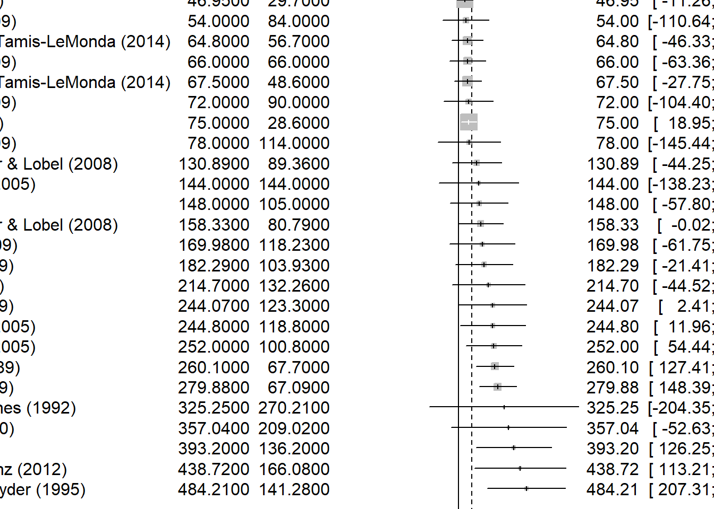
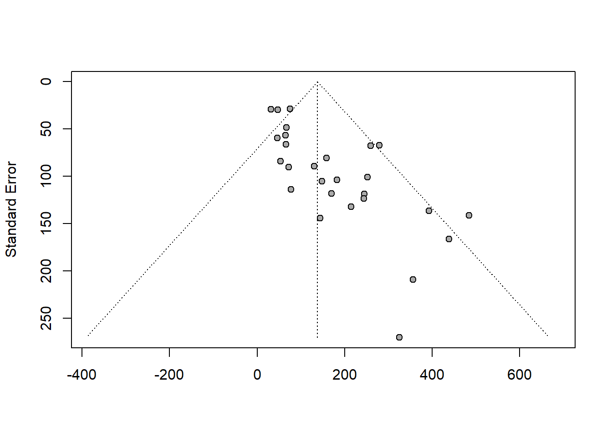
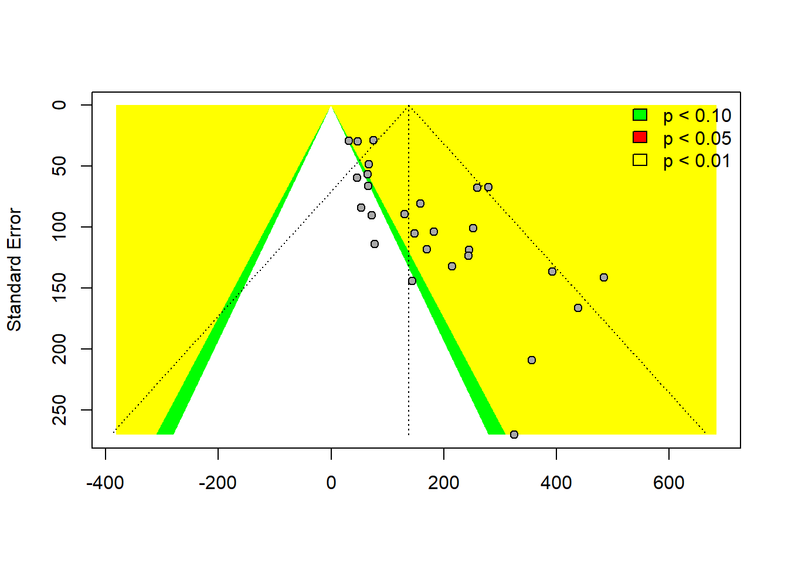

```{r}
install.packages("meta")
```Warning: package 'meta' is in use and will not be installed```{r}
install.packages("meta")
```Warning: package 'meta' is in use and will not be installeda statistical analysis that combines the results of multiple scientific studies. (Wikipedia)
Very important in e.g. medicine (where it’s relatively easy to use).
Can serve different goals:
```{r}
library(readxl)
data <- read_excel("C:\\Users\\Ankit\\OneDrive\\Documents\\ReproducibleR\\RRcourse2023\\13. Metaanalysis\\metaanalysis_data.xlsx")
``````{r}
# Perform meta-analysis with fixed effects
fixed_effects <- meta::metagen(TE = Mean_boys_play_male,
seTE = SD_boys_play_male,
data = data,
studlab = paste(Study),
comb.fixed = TRUE,
comb.random = FALSE)
fixed_effects
```Number of studies: k = 27
95%-CI z p-value
Common effect model 96.0551 [71.9496; 120.1605] 7.81 < 0.0001
Quantifying heterogeneity:
tau^2 = 5063.4218 [836.1518; 17480.4313]; tau = 71.1577 [28.9163; 132.2136]
I^2 = 48.7% [19.8%; 67.2%]; H = 1.40 [1.12; 1.75]
Test of heterogeneity:
Q d.f. p-value
50.67 26 0.0026
Details on meta-analytical method:
- Inverse variance method
- Restricted maximum-likelihood estimator for tau^2
- Q-Profile method for confidence interval of tau^2 and tau```{r}
# Perform meta-analysis with both fixed and random effects
mixed_effects <- meta::metacont(n.e = N_boys,
mean.e = Mean_boys_play_male,
sd.e = SD_boys_play_male,
n.c = N_boys,
mean.c = Mean_girls_play_male,
sd.c = SD_girls_play_male,
data = data,
studlab = paste(Study),
comb.fixed = TRUE,
comb.random = TRUE)
mixed_effects
```Number of studies: k = 27
Number of observations: o = 1594
MD 95%-CI z p-value
Common effect model 47.1863 [41.5655; 52.8070] 16.45 < 0.0001
Random effects model 94.7848 [66.7974; 122.7723] 6.64 < 0.0001
Quantifying heterogeneity:
tau^2 = 4677.2412 [2666.2743; 10251.5779]; tau = 68.3904 [51.6360; 101.2501]
I^2 = 87.9% [83.6%; 91.1%]; H = 2.88 [2.47; 3.35]
Test of heterogeneity:
Q d.f. p-value
215.40 26 < 0.0001
Details on meta-analytical method:
- Inverse variance method
- Restricted maximum-likelihood estimator for tau^2
- Q-Profile method for confidence interval of tau^2 and tau```{r}
# Perform meta-analysis with random effect
random_effect <- meta::metagen(TE = Mean_boys_play_male,
seTE = SD_boys_play_male,
data = data,
studlab = paste(Study),
comb.fixed = FALSE,
comb.random = TRUE)
random_effect
```Number of studies: k = 27
95%-CI z p-value
Random effects model 138.2605 [95.9332; 180.5879] 6.40 < 0.0001
Quantifying heterogeneity:
tau^2 = 5063.4218 [836.1518; 17480.4313]; tau = 71.1577 [28.9163; 132.2136]
I^2 = 48.7% [19.8%; 67.2%]; H = 1.40 [1.12; 1.75]
Test of heterogeneity:
Q d.f. p-value
50.67 26 0.0026
Details on meta-analytical method:
- Inverse variance method
- Restricted maximum-likelihood estimator for tau^2
- Q-Profile method for confidence interval of tau^2 and tau```{r}
# Plot forest plot for fixed effects meta-analysis
fixed_effects %>% forest(sortvar = Mean_boys_play_male)
```
```{r}
# Perform meta-regression to explore effects of `Female authors` and `Male authors`
fixed_effects %>% metareg(~ `Female authors` + `Male authors`)
```
Mixed-Effects Model (k = 27; tau^2 estimator: REML)
tau^2 (estimated amount of residual heterogeneity): 5996.9393 (SE = 3637.0127)
tau (square root of estimated tau^2 value): 77.4399
I^2 (residual heterogeneity / unaccounted variability): 57.09%
H^2 (unaccounted variability / sampling variability): 2.33
R^2 (amount of heterogeneity accounted for): 0.00%
Test for Residual Heterogeneity:
QE(df = 24) = 50.2842, p-val = 0.0013
Test of Moderators (coefficients 2:3):
QM(df = 2) = 2.1591, p-val = 0.3397
Model Results:
estimate se zval pval ci.lb ci.ub
intrcpt 231.0918 67.1179 3.4431 0.0006 99.5431 362.6405 ***
`Female authors` -33.7115 23.0884 -1.4601 0.1443 -78.9638 11.5409
`Male authors` 1.5943 22.4597 0.0710 0.9434 -42.4259 45.6145
---
Signif. codes: 0 '***' 0.001 '**' 0.01 '*' 0.05 '.' 0.1 ' ' 1```{r}
# Plot funnel plot for random effects meta-analysis
random_effect %>% funnel()
```
The above plot shows asymmetry or clustering of data points, it might indicate the presence of publication bias or heterogeneity.
```{r}
# Customize the funnel plot with contour levels and colors
contour_levels <- c(0.70, 0.75, 0.75)
contour_colors <- c("green", "red", "yellow")
funnel(random_effect, contour = contour_levels, col.contour = contour_colors)
legend("topright", c("p < 0.10", "p < 0.05", "p < 0.01"), bty = "n", fill = contour_colors)
```